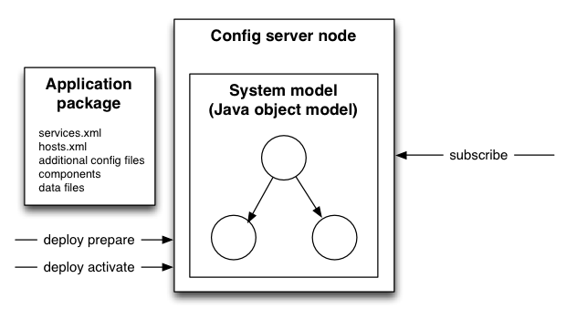

This document gives an overview of the Cloud Config System (CCS) The problem of configuring cloud nodes can be divided into three parts, each addressed by different solutions:
Note that by these definitions we may allow all the cloud nodes to have the same software packages (disregarding version differences, discussed later) because variations in what services are run on each node and in their behavior can be achieved entirely by using CCS. This allows us to manage the complexity of node variations completely within the cloud configuration system rather than across multiple systems.
CCS makes the following assumptions about the nodes using it:
The responsibility of configuring a system can be divided into two largely independent parts
This division allows the problem of reliable configuration delivery in large distributed systems to be addressed in configuration delivery while the complexities of assembling complete configurations in the cloud environment can be treated as a vm-local design problem.
An important feature of CCS is the nature of the interface between the delivery and assembly subsystems. The assembly subsystem creates as output a (Java) object model of the desired distributed system. The delivery subsystem queries this model to obtain concrete configurations of all the components of the system. This allows the assembly subsystem to accept higher level and simpler to use abstractions as input and automatically derive detailed configurations with the correct interdependencies. This division insulates the external interface and the components being configured from changes in each other. In addition the system model provides the home for logic implementing node/component instance variations of configuration.
The next two sections will discuss the delivery and assembly subsystems separately.
Configuration delivery encompasses the following aspects:
These aspects work together to realize the following goals:
The next three subsections discusses the three aspects above, followed by subsections on two special concerns - bootstrapping and system upgrades.
A configuration is a set of simple or array key-values with a name and a type which can possibly be nested. For example:
myProperty "myvalue" myArray[1] myArray[0].key1 "someValue" myArray[0].key2 1337
The type definition (or class) of a configuration object defines and documents the set of fields a configuration may contain with their types and default values. It has a name as well as a namespace. For example, the above config instance may have this definition:
namespace=foo.bar # Documentation of this key myProperty string default="foo" # etc. myArray[].key1 string myArray[].key2 int default=0
An individual config typically contains a coherent set of settings regarding some topic, such as "logging" or "indexing". A complete system consists of many instances of many config types.
Individual components of a system consumes one or more such configs and use their values to influence their behavior. APIs are needed for requesting configs and for accessing the values of those configs as they are provided.
Access to configs happens through a (Java or C++) class generated from the config definition file. This ensures that any inconsistency between the fields declared in a config type and the expectations of the code accessing it are caught at compile time. The config definition is best viewed as another class with an alternative form of source syntax belonging to the components consuming it. A Maven target is provided for generating such classes from config definition types.
Components may use two different methods for requesting configurations (only Java code is shown, here see the Developing with the C++ Config API doc for how to do this in C++):
Subscription: The component sets up ConfigSubscriber, then subscribes to one or more configs. This is the simple approach, there are other ways of getting configs too.
ConfigSubscriber subscriber = new ConfigSubscriber();
ConfigHandle<MydConfig> handle = subscriber.subscribe(MyConfig.class, "myId");
if (!subscriber.nextConfig()) throw new RuntimeException("Config timed out.");
if (handle.isChanged()) {
String message = handle.getConfig().myKey();
# …consume the rest of this config
}
Dependency injection: The component declares its config dependencies in the constructor and subscriptions are set up on its behalf. When changed configs are available a new instance of the component is created. The advantage of this method is that configs are immutable throughout the lifetime of the component such that no thread coordination is required. This method is currently only available in Java using the jdisc container.
public MyComponent(MyConfig config) {
String myKey = config.myKey();
# …consume the rest of this config
}
For unit testing configs can be created with Builders, submitted directly to components.
The config delivery mechanism is responsible for ensuring that a new config instance is delivered to each subscribing component in a timely fashion each time there is a change to the system model causing that config instance to change. A config subscription is identified by two parameters, the config definition name and namespace and the config id used to identify the particular component instance making the subscription. The in-process config library will forward these subscription requests to a node local config proxy which provides caching and fan-in from processes to node. The proxy in turn issues these subscriptions to a node in the configuration server cluster, each of which hosts a copy of the system model and resolves config requests by querying the system model. To provide config server failover the config subscriptions are implemented as long-timeout gets which are immediately resent when they time out, but conceptually this is best understood as push subscriptions.

As configs are not stored as files locally on the nodes there is no possibility of inconsistencies due to local edits, or of nodes coming out of maintenance with a stale configuration. As configuration changes are pushed as soon as the config server cluster allows, time inconsistencies during reconfigurations are minimized, although not avoided as there is no global transaction.
Until now we have described systems in their steady state, but how do a set of processes, hosting a set of components, each initiating subscriptions using their own unique config id's come to be? This is the bootstrapping process.
At the outset, a single sentinel process is started on all nodes. This process gets the config server names from VESPA_CONFIGSERVERS and issues a subscription for a process list config using the host name as the config id. This config lists the processes to be started on the node along with the config id to assign to each, typically the logical name of that service instance. Those processes can then in turn instantiate internal components, each assigned the same or another config id, and instantiating further components, etc. This cascade of events brings the system into steady state from an initial state where all nodes are the same and only knows the names of the config servers.
The configuration server will up/downgrade between config versions on the fly on minor upgrades which causes discrepancies between the config definitions requested from those produced by the configuration model. Major upgrades which involve incompatible changes to the configuration protocol or the system model, however, requires a special procedure. A configured node can be detached from the configuration system. On detachment, the node will stop listening to the config server and instead keep serving its current config from its local snapshot. To avoid losing the snapshot on restart, the proxy will save the config snapshot on disk during detachment.
With this operation available, the procedure goes as follows: Detach all nodes, upgrade the config server and reassemble its configuration. Upgrade and reattach the configured nodes one by one.
Config assembly is the process of turning the configuration input sources into an object model of the desired system which can respond to queries for configs given a name and config id. Config assembly for cloud systems can become complex, because it involves merging information owned by multiple parties into a coherent whole:
The current config model assembly procedure uses a single source - the application package. The application package, owned by the application, is a directory structure containing some defined files and sub-directories which together completely defines the system - including which nodes belong in the system, which services they should run and the configuration of these services and their components. When the application deployer wants to change the application, a deploy command is issued to a config server, with the application package as argument.
At this point the system model is assembled and validated and any feedback is issued to the deployer. If the deployer decides to make the new configuration active a commit command is then issued, causing the config server cluster to switch to the new system model and respond with new configs on any active subscriptions where the new system model caused the config to change. This ensures that subscribers gets new configs timely on changes, and that the changes propagated are the minimal set such that small changes to an application package causes correspondingly small changes to the system.
The config model itself is pluggable, so that cloud service providers may write plugins for assembling a particular service. The plugins are written in Java, and is installed together with the CCS. Service plugins define their own syntax for specifying services that may be configured by cloud applications. This allows the applications to be specified in an abstract manner, decoupled from the configuration that is delivered to the components.
Further information in the reference doc